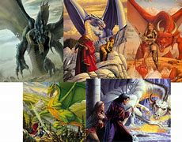
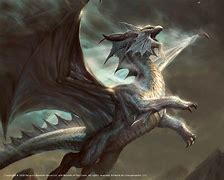
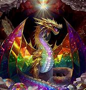

Dragones Cromáticos Son conocidos por ser malignos y crueles. Los más populares son: Dragón Rojo: Son los más poderosos y codiciosos, viviendo en montañas y respirando fuego. Dragón Azul: Manipuladores, viven en desiertos y lanzan rayos como ataque. Dragón Verde: Habitantes de los bosques, son astutos y engañosos, y atacan con gases venenosos. Dragón Negro: Residen en pantanos y ruinas, conocidos por su maldad y su aliento ácido. Dragón Blanco: Los más pequeños y salvajes, viven en lugares fríos y usan ataques de frío.
Dragones Metálicos Tienden a ser benignos y proteger a los más débiles. Algunos de ellos son: Dragón Dorado: Los más poderosos y nobles, respirando fuego y gas debilitante. Dragón Plateado: Amigables y protectores, viven en montañas y atacan con frío. Dragón Bronceado: Habitan cerca del agua y suelen ser aliados de los humanos. Dragón Cobrizo: Divertidos y astutos, viven en terrenos rocosos y atacan con ácido. Dragón Latón: Comunican mucho y viven en desiertos, con ataques de fuego y sueño.
Dragones Gem Presentados en la edición más reciente de D&D (5e, Fizban's Treasury of Dragons): Dragón de Amatista: Tienen poderes relacionados con la gravedad. Dragón de Cristal: Especialistas en luz y visión. Dragón de Esmeralda: Centran sus habilidades en la manipulación del tiempo. Dragón de Zafiro: Pueden influir en las mentes y la psiónica. Dragón de Topacio: Sus habilidades están conectadas a la necromancia y la descomposición.
Dragón de Escarlata: Sus habilidades están conectadas a la metalurgia y la fundicion.   